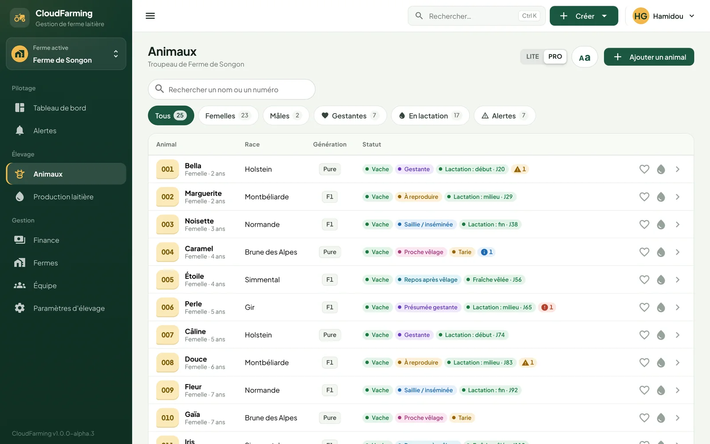
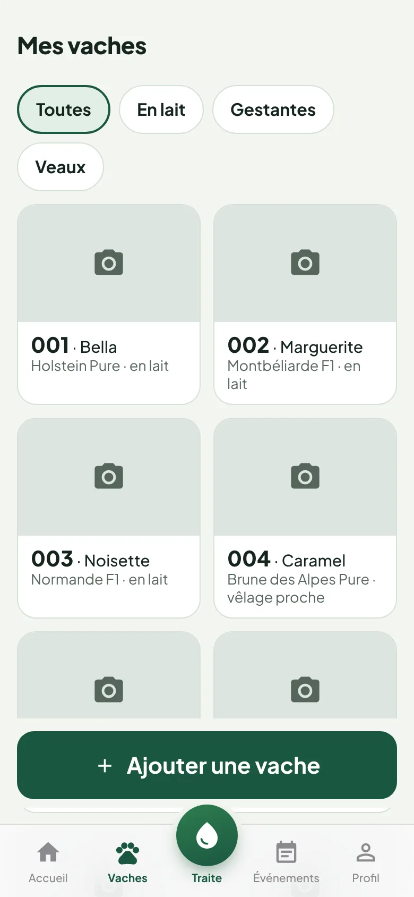

Le troupeau, vache par vache
Chaque animal a sa fiche : numéro, nom, race, niveau de sang, photos, âge exact ou estimé, origine. Vaches, génisses, veaux et taureaux, présents ou sortis.
- Ajout d'une vache, d'un veau ou d'un taureau en quelques touches
- Filtres instantanés : en lait, gestantes, veaux, alertes
- Statut calculé automatiquement : vêle, génisse, vache, tarie…

